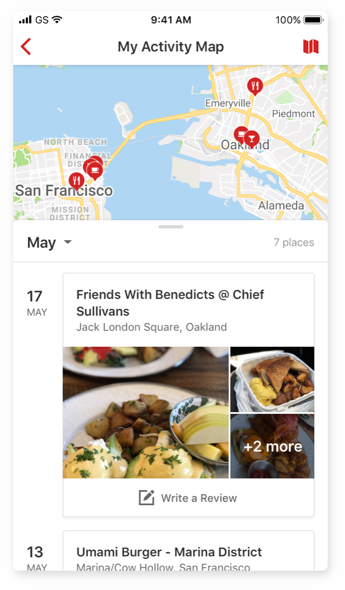
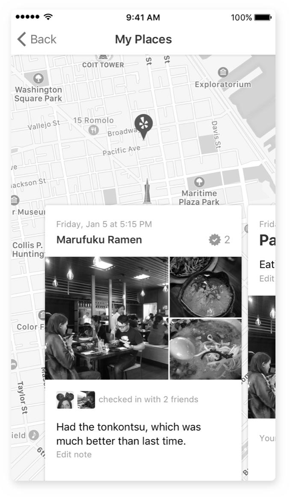
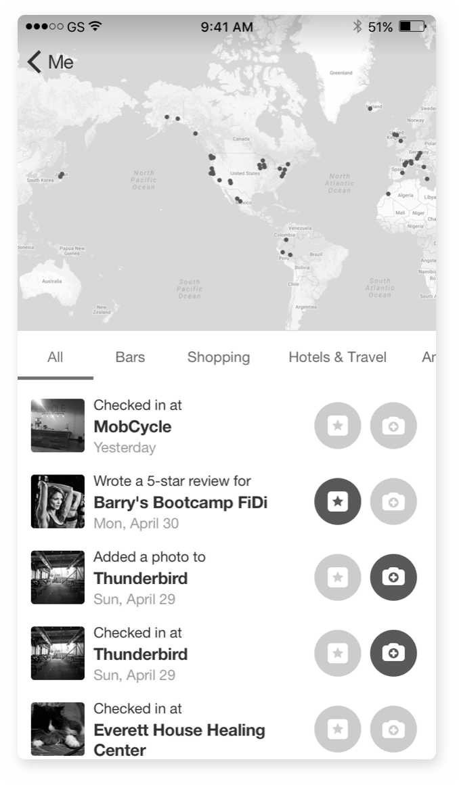
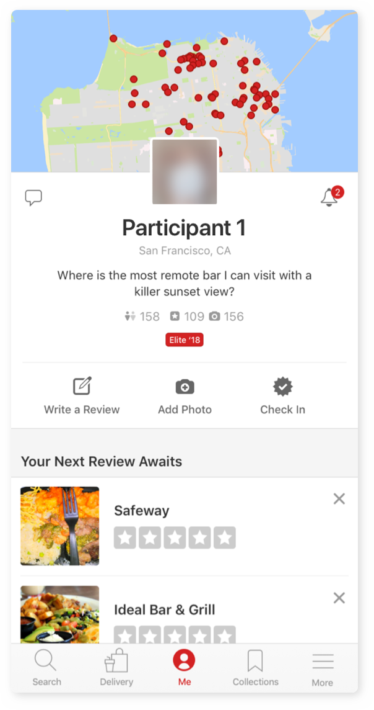

Yelp has always been about connecting people to great local businesses around the world. Despite this mission, there has never been an easy way to look back on these connections and places we’ve experienced on Yelp. This project was an exploration on how one might be able to easily access a centralized place of their activity on Yelp, as well as a look into what a visualization of one’s geographical history could look like and mean to our users. Over the course of six months, I spearheaded the user research and design of the Activity Map as the sole designer on the Contributions team. Through a mix of user interviews, iterative prototyping, and concept testing, my goal was to take a broad, conceptual idea and deliver something valuable to Yelp’s power users.

Project Goals
Get users to write more reviews
From a business standpoint, this feature needed to have a positive impact on our team’s main KPI: the rate of contributions (reviews, photos, Check-Ins) to Yelp, a metric that has been proven very difficult to move on a large scale. This was important if we wanted to get buy-in from stakeholders to invest the engineering effort in this experience.
Get users to see the value in their contributions
We’ve seen from previous projects we’ve launched that people like seeing old reviews and photos they’ve contributed to Yelp in the past. With this project, we wanted to take that experience a step further and lay out all of their content for them in a way that highlights their hard work and their unique experiences in an engaging way.


Numerous explorations in varying degree of fidelity
Explorations
Various people on the team had different ideas about what this feature should do and how we would get our users to engage with it. Ideas ranged from promising the user recommended businesses based on the visits they log to providing interesting “insights” about the types of places they frequented. I explored it all, varying in depth from low-fidelity sketches to high-fidelity prototypes, and went through numerous rounds of feedback with teammates and stakeholders.
One idea we liked was in an iteration where I was exploring how to distinguish complete vs. incomplete states—that is, places the user had been to and completed the contribution trifecta (check-in, review, photo) vs. visits with no contribution. Filled-in, colored circles made the feature seem more like a bingo game that played off people’s natural desire to want to complete things. However, we let this idea go in favor of something that allowed users’ existing content to shine rather than highlight what was missing.
Narrowing Focus
After countless explorations, a handful of interviews with our users, and updated estimates from the engineering team, we decided to move forward with a direction that was simple yet captured a common theme we heard among the users we interviewed: a catalog of all the places a user has been that they can easily reference needed. And since some of our users put considerable amounts of effort into writing reviews and uploading photos to Yelp, why not tie them directly to the experiences that they were documenting?
An early iteration of our finalized direction
Concept Testing
Before finalizing the visual details of the design, I wanted to see how our users responded to our chosen direction. Because our proposed feature wasn’t meant to solve an inherent user “need,” we conducted a concept test rather than a usability study. Our goal was not to see if our users could complete a set task as quickly as possible, but rather to gauge general interest and intrigue in the feature, and to figure out which parts they found the most value in.

In order to get the most accurate readings from our participants, I used their actual contributions on Yelp in the prototypes we showed them.
Creating a Card System
After validating our direction, there were still a lot of details I had to finalize before our team of engineers started building out our pilot version of the feature. In our concept testing, we saw that many participants did not notice that the map and timeline were directly related. I also needed to design a system for the cards used in the timeline in a way that both made the content easily scannable and efficient for the engineers to build. Unfortunately, there was only time to do the latter due to engineering constraints and a tight deadline, so I focused on creating different components for the cards that would cover every case (e.g. a batch of photos uploaded to a business without a review, a check-in to a business the user had already written a review for, etc.) in the time I had left.
Clockwise starting from top left: review with photos and a Check-In, a Check-In to a place a user had written a review for previously, same as previous but with a photo, user wrote a review with no Check-In, user only uploaded photos, just a Check-In
Final Deliverables
Due to time constraints, we weren’t able to implement the ability to go full screen with the map or list. For now, users are constrained to the half-map, half-list view. The resulting design we ended up shipping for v1 looks like this:
What’s currently being tested on a cohort of our users.
Results and Next Steps
We are currently testing this experience on a cohort of our users. While we await the results, I took it upon myself to solve some of the issues we saw in our concept testing and improve upon what we were able to ship initially. Here’s a prototype of what I hope this feature could be in the near future!
Learnings
This project was a huge endeavor, and the amount time and resources that went into designing it was unlike anything I, or even my team, had been used to. Here are a few takeaways I got from working as the only designer on this project:
Take what users say with a grain of salt.
Qualititative research isn’t always going to get you the answers you want to hear. Especially when it’s generative research, the answers you get may be a jumbled mess that won’t always point you in a clear direction. In our case, the users we interviewed didn’t see an inherent problem in the way they were trying to remember where they had been, but we saw in their roundabout ways of doing so an opportunity to make something that filled that gap. Which brings me to my next learning…
Good products don’t always solve an obvious (or the original) problem.
This one may be a little bit controversial, and one I am still coming to grips with, since “design thinking” is always touted as “solving problems.” I’m sure the most efficient way to build a product that sells is to find a need and fill it, but what about products like Facebook? Snapchat? One of the biggest things I learned while working on this project was to trust my intuition for ideas that seem inherently interesting, while at the same time making sure that I’m using the right words to articulate hard-to-grasp feelings beyond “cool” or “awesome.”
Involve engineers early on.
This one’s probably the easiest to agree on and something others have said time and again. I regret not speaking to engineers sooner, and not pushing my PMs harder to get everyone on the same page earlier on. If they were to see what we were thinking about during the ideation process, we would’ve been able to eliminate some ideas early on.